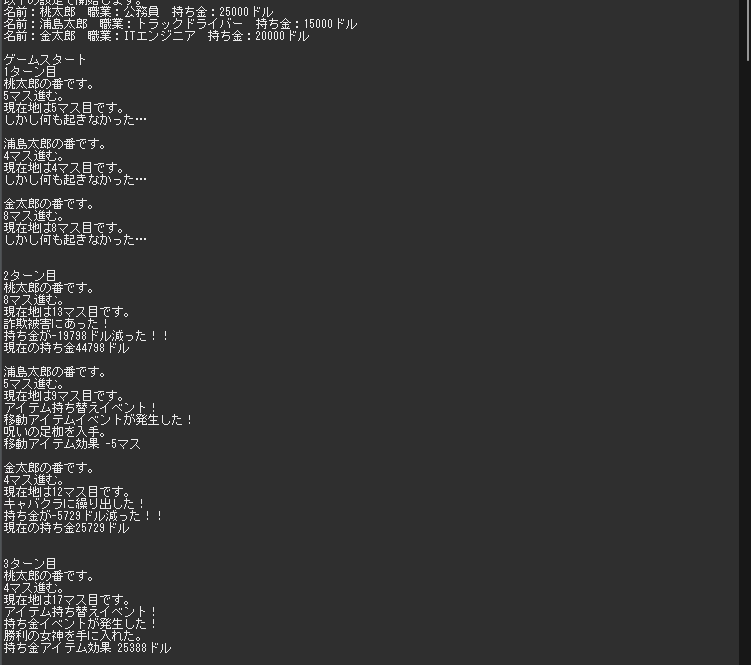

1, Mainクラス
Mainクラスで主にゲームの進行するように作成しました。
characterクラスでキャラクターを生成し
characterクラスに渡すゲームマップを作成するようにしました。
ターン進行中にゴールに到着したときに処理を止めて結果発表に移るようになっています。
2, characterクラス
characterクラスでは主にMainクラスからもらったマップを使って
ゲームを進めてイベントをこなしていくように作成しました。
このクラスから他のクラスを呼び出し、イベントを発生させていきます。
3,Mapクラス
MapクラスではMeinクラスからゲーム開始時に呼び出され
マップのマス数と各マスのイベント番号を決めて配列で返すようにしました。
4,Jobクラス
Jobクラスはキャラ作成時にcharacterクラスから呼び出されます。
呼び出されるとcharacterのジョブを決定します。
ジョブの決定と同時にそれぞれのジョブに振り分けたエフェクトをキャラクタークラスに登録します。
5,Eventクラス
eventクラスでは各マップに設定されているイベント番号に従って
イベントの種類を決定します。
6,Itemクラス
Itemクラスはイベントの中の一つでアイテム交換のイベントが発生した場合に呼び出されます。
呼び出されると移動力または持ち金取得量の増減を決めるアイテムが付与されるようになっています。
それぞれの増減の数値はランダムになっており、
数値によってイベントの文言が変わるように設定されています。
7,moneyEventクラス
moneyEventクラスは持ち金の増減が発生した場合に
金額によって変わるイベント内容が表示されます。
9,キャラクターの名前を決定
今回はそれぞれ「桃太郎」「浦島太郎」「金太郎」と名づけます。
名前を入力するとそれぞれの職業と所持金を決めます。
表示には出していませんがそれぞれ移動できるマップ＋αと持ち金＋αのエフェクトも与えられています。
10,ゲーム進行

今回は名前を決定するとゲーム終了まで進めるようにしました。
各キャラクターのターンごとにまとまって見やすくしてみました。
ターン数の表示も一度ずついれることで進行具合も分かりやすいようにしました。
11,ゲーム終了
誰かがMapクラスで作成したマス数を超えると中断し結果発表が始まります。
結果発表ではすべてのキャラクターの持ち金を表示させて
その中でも一番高い金額を持っている人が勝ちとなります。
これでゲーム終了です。
ソースコードの確認はこちら